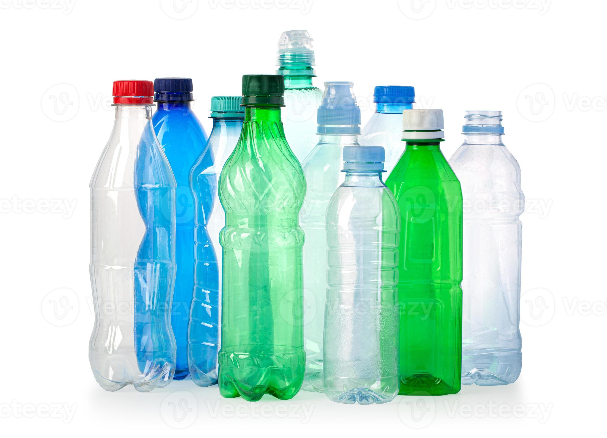
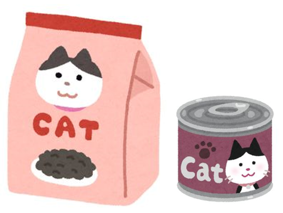

DONATE & HELP OUR CATS
Even a small contribution can make a big difference
Your donation helps provide food, and other essential & veterinary care for stray and feral cats.
Revolut: +356 79253603
BOV Pay: +356 79253603
Revolut: +356 79253603
BOV Pay: +356 79253603

BCRS BOTTLES
Donate your eligible BCRS bottles and cans. The proceeds help us provide food and care.
Please get in touch so we can arrange pick-up.

CAT FOOD
You can also support our colonies by
donating cat food (dry & wet).
Please get in touch so we can arrange pick-up.

Dingli Stray Cats – Helping Stray and Feral Cats in Malta
Loading Facebook posts...